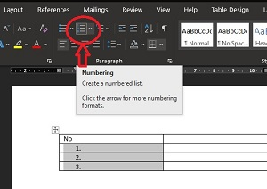

Penulis >> Tomi Nurhidayat
Membuat nomor otomatis di microsoft word pada dasarnya sangatlah mudah. Saya yakin diantara temen-temen pasti sudah mengetahuinya, walaupun tidak sedikit pula yang belum mengetahui.
Untuk membuat nomor yang ketika di enter kemudian secara otomatis dibuatkan nomor berikutnya sangatlah mudah, temen-temen hanya tinggal mengetikkan angka diikuti karakter titik(.) lalu spasi kemudian mulai menuliskan sesuatu dan untuk nomor selanjutnya akan otomatis ketika menekan tombol enter.
Namun yang jadi masalah adalah saat hendak membuat nomor otomatis pada sebuah tabel di microsoft word. Bagi temen-temen yang pernah menggunakan microsoft excel mungkin akan merasa mudah, karena di microsoft excel terdapat fitur untuk membuat nomor urut otomatis hanya dengan mengetikan nomor di cell pertama kemudian menariknya hingga cell tertentu sesuai keinginan, maka berhasil membuat nomor otomatis.
Tidak mengetahui cara membuat nomor otomatis ini memang tidak masalah ketika temen-temen hanya membuat tabel dengan 20 nomor saja, tapi akan merasa jengkel saat harus mengetikkan angka untuk membuat tabel dengan jumlah nomor lebih dari 20.
Untuk itu artikel ini akan menjelaskan langkah-langkah mengenai cara membuat nomor otomatis dalam tabel, silahkan baca artikel ini sampai selesai.
Itulah sedikit pengetahuan mengenai cara membuat nomor urut otomatis di tabel microsoft word. Mudah-mudahan bisa bermanfaat untuk sobat yang belum mengetahuinya. Terima kasih telah berkunjung